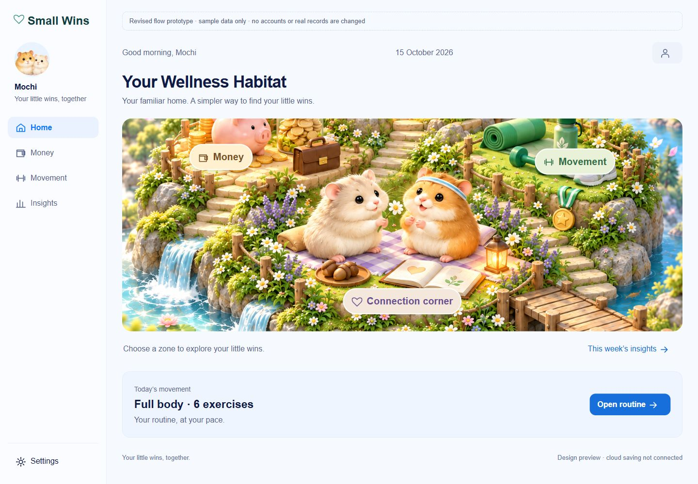
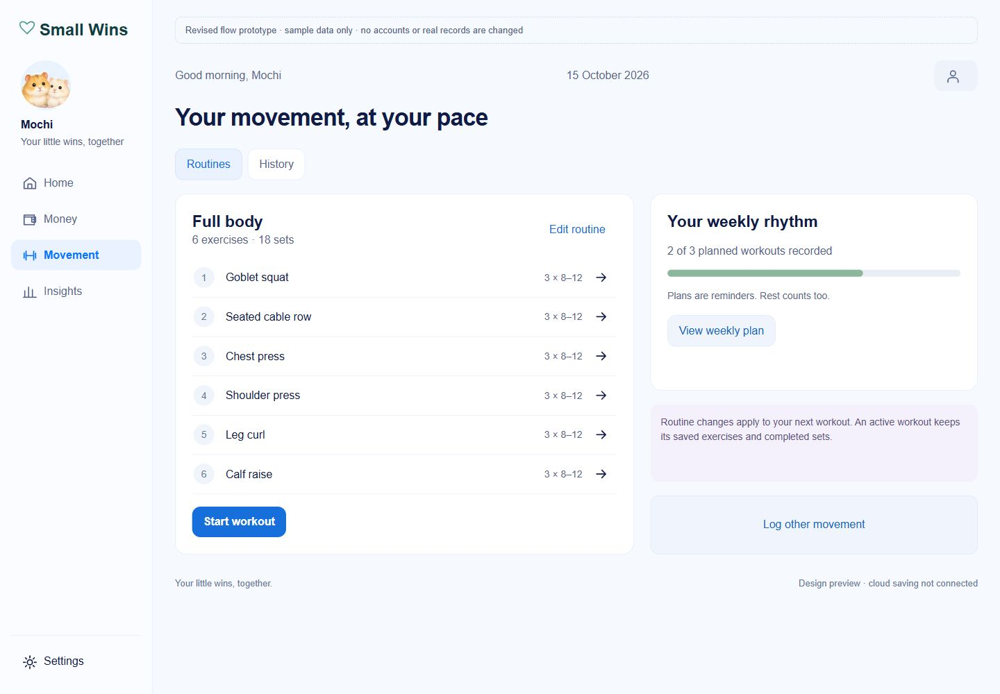
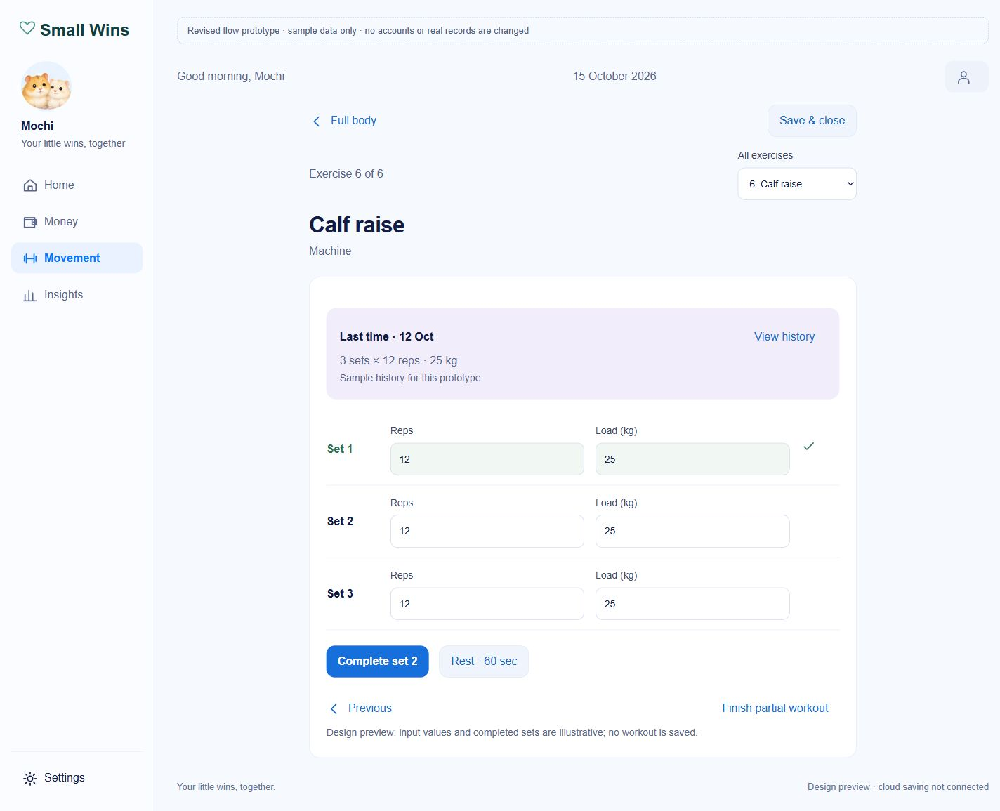
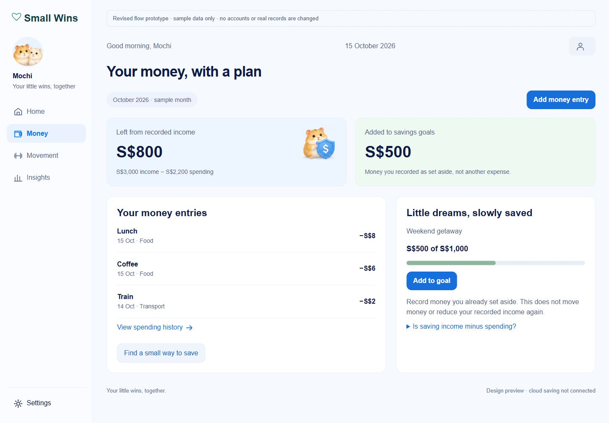
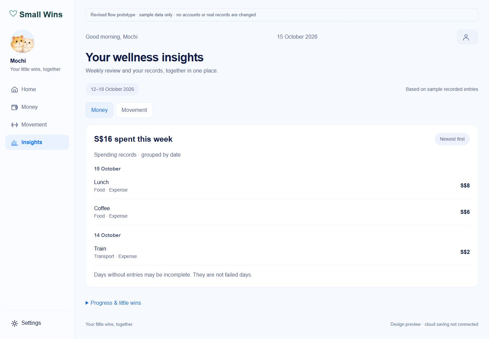
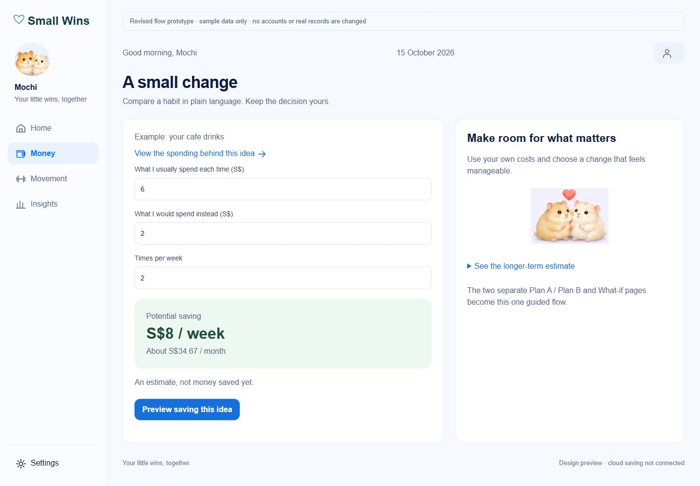
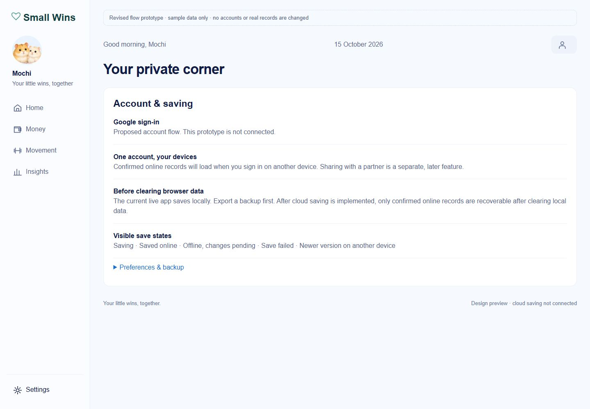
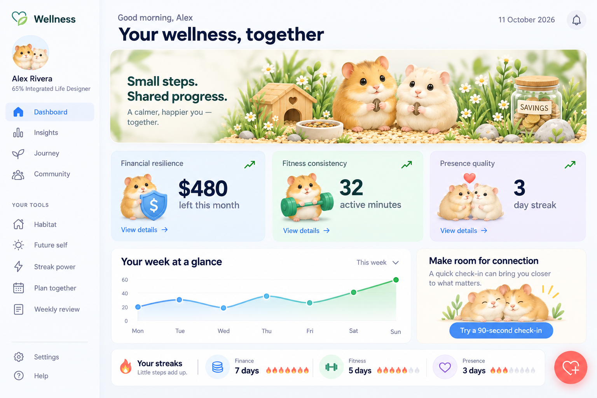

01 · Habitat / Home

Original map and characters. Instructions below the image, four primary destinations.
Desktop · MobileSMALL WINS · DESIGN REVIEW · 15 OCTOBER 2026
Original artwork and blue/pastel component styling, with Habitat as Home and four main destinations.
Explore the clickable prototypeRead the review and limitations · Full feedback and design plan
Sample data only. This prototype does not change the live app or save records. Mobile screens capture the first viewport; scroll in the prototype to see the rest.
Original map and characters. Instructions below the image, four primary destinations.
Desktop · Mobile
All exercises accessible. Routines and history stay together.
Desktop · Mobile
Previous load beside your sets, with no decorative hamster panel over the controls.
Desktop · Mobile
Recorded surplus and money set aside are clearly separated.
Desktop · Mobile
Weekly review merged here. Money and Movement have separate date groups.
Desktop · Mobile
Usual cost, alternative cost, frequency. One estimate instead of two planning pages.
Desktop · Mobile
Supporting concept explaining private online saving and device recovery. Authentication is not connected.
Desktop · MobileThe original files remain unchanged. The same hamster imagery is reused in the prototype.
